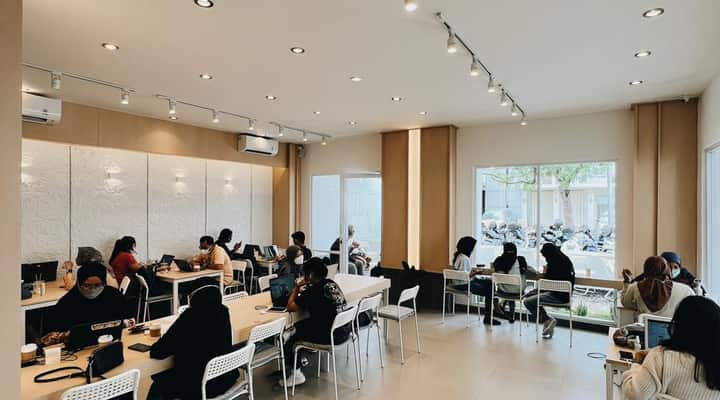
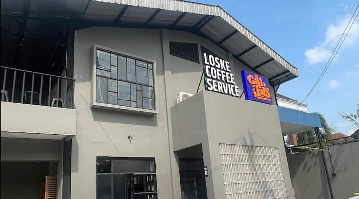
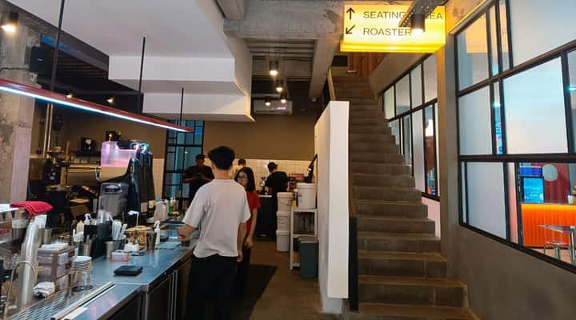

Proposal only. No application code changed. Nothing under client/, server/, config, the database or production was touched, and nothing was deployed.
This report is docs/redesign/opus-v2/index.html. Its assets sit beside it in docs/redesign/opus-v2/: map.svg, drawn from OpenStreetMap roads of Solo, and shop photos from the live API (p-*.jpg, t-*.jpg). Shop names, hours, ratings and coordinates come from https://kopimap.mwyndham.dev/api/coffees, read on 29 October 2026 (150 shops). Distances are measured from a visitor on Jl. Slamet Riyadi near Sriwedari.
The first pass, docs/redesign/opus/index.html, is unchanged; this is the improvement pass.
Kopimap becomes the back counter of a kopi bar in Solo. The list is a receipt that prints out of a till. Every shop you open is a ticket clipped to a steel rail and tied to its spot on the map with a thread. Editing is writing on a yellow carbon nota. Everything is paper, ink and steel, and every edge is cut square or torn.
Mobile search has a safe place to live. The till's display is now a key. Tapping it raises the receipt to Full and puts the query on the paper's top edge, so the keyboard covers the till, never the field. The new mockup is in §6; the risk and the decision below are updated.
The map is printed quieter. The mockups desaturate the placemat by about 45%. In MapLibre the land goes to 4% ink, minor roads 10%, major roads 18%, water 8% blue-grey; only the motorway keeps the ochre. The marigold selection gets a 1.5px ink edge so it cannot be mistaken for a road.
The ticket fades instead of being cut. The shop ticket's lower edge now fades over the last 54px, so “Comments” is no longer sliced by the frame. The app still scrolls; the mockup now says so.
The stamp stays small, the tap target does not. Each map stamp sits in a 44px invisible square. That is the iOS and Android minimum, and it keeps the ink drawing at 13–21px.
The district fix ships first.area() is a few lines and every list surface uses it, so it is step 0 rather than a decision. The rest of the build order is unchanged.
1. What the current UI is, read from the code
The redesign in docs/redesign.md fixed the structure: one panel, edit in place, honest empty states. What it kept is the look of every other map app. These are the specific reasons, with the lines that cause them.
It is the stock map-app shell. Desktop is a 400px card with lg:rounded-box lg:shadow-xl floating on the left (client/src/routes/-panel.tsx:64). Phones get a rounded-t-[1.25rem] bottom sheet with a 40×4px pill handle (-panel.tsx:87) and a round floating btn-circle btn-lg “+” (-panel.tsx:69). That is the Google Maps and Material kit, part for part. Nothing on screen is about coffee or about Solo.
The surface has no material. The light theme is three almost identical greys with no chroma: base-100 98%, base-200 97%, base-300 92% lightness, with daisyUI’s --depth: 0 and --noise: 0 (client/src/index.css:19-21, 45-46). The only identity left is one green and one blue.
“Reviewed” changes colour at night.--color-primary is green in light mode (index.css:23, oklch 45% 0.15 150) and coral red in dark mode (index.css:59, oklch 66% 0.2 22). The pin, chip and list star that mean “reviewed” change hue with the OS theme.
Status is colour on identical shapes. Known and reviewed pins use the same PIN_PATH and differ only by stroke colour and stroke width, 1.7 against 2.6 (-mapLayers/-coffeeMarkers.tsx:52-54). The selected pin is the same teardrop, filled, with an animate-ping halo (-mapLayers/-coffeeMarker.tsx:58-61), which is the “blue dot” idiom. In the list, a reviewed ★ 3.5 and a rated-but-not-reviewed ★ 3.5 differ only by text-primary (-contentTab/-common/-cofeeListItem.tsx:58-61), and 20 known shops carry a rating.
The exception is printed as the rule. 126 of 150 rows print “Not reviewed” in accent blue (-cofeeListItem.tsx:62-63), and only 3 shops are reviewed. The word that repeats on almost every row is the one that should stand out least.
District labels leak street names and plus codes.area() (-util.ts:19-20) looks for “Kec.” and otherwise takes the first comma part. 29 of 150 addresses are in Google’s English format, so rows show “Slamet Riyadi St No.241”, “CRJ8+9QG”, “Parking area” or “Dusun III” where the district belongs, although those addresses do name it (“…, Sriwedari, Laweyan, Surakarta City”).
The panel’s height ignores its content. The default tab is Latest reviews (client/src/store/store.ts:69), which has 3 shops, but the panel always runs from top-4 to bottom-4. On production at 1440×900 the three rows fill about 180px of an 868px card. The rest is empty grey.
One shop at a time, no trail. Browse and Shop swap inside the same column (-panel.tsx:110-116). Comparing three shops means Back, scroll, open, Back. J and K only walk the list a shop was opened from (-shortcuts.tsx:56-61), and nothing remembers what you looked at a minute ago.
Rounded everything.rounded-box (0.75rem) appears 12 times, rounded-full 7 times and rounded-field 3 times, on top of daisyUI’s own radii on every btn, input, badge, tab, kbd and modal-box.
The sparse-shop machinery now rarely shows.redesign.md was written when 50 shops had no address. Today the API returns 0 shops without an address, 1 without hours (Arzi Coffee), and a thumbnail for every shop. The real gaps are reviews (3 of 150) and ratings (23 of 150), so that is where the design should spend its attention.
2. The direction: Nota
Nota is the carbon slip a warung writes your order on. The whole app is the counter where those slips live. It has one source of objects, the bar of a kopi shop, so the metaphor stays coherent instead of turning into a costume.
Object on the counter
What it is in Kopimap
Material
The till, with a cash-register display
Search and the global keys: Latest reviews, All places, Add shop, shortcuts
Graphite plastic, steel keys, green VFD glass
The receipt roll
The list. It is only as long as its content.
Thermal paper with halftone thumbnails and dot leaders
The order rail and its tickets
The open shop, plus the shops you opened before it
The rail: history you can see and touch. Every shop you open is a ticket clipped to a steel rail along the top of the screen. The open one hangs full length. The ones you opened before ride the rail as short stubs, newest nearest. Click a stub to hang it again, press × to take it down, and the oldest falls off the end when the rail is full (three stubs at 1440px, two at 1280px, one at 1024px, two on a phone). It replaces Back with something you can see, and it doubles as a compare tray: the hours and status of the last three shops stay on screen. [ and ] walk the rail; J and K still walk the list.
The tether: a thread instead of a forced centre. The open ticket has a square eyelet, and a thread runs from it to its stamp on the map. The thread sags like string. When you pan, it follows; when the shop leaves the screen, it runs to the edge and keeps pointing. Nobody has to hunt for “which pin is this”, and the map no longer has to fly the shop into a gap beside the panel to make the link obvious.
The till at the thumb. On phones the sheet is paper fed up out of a till that sits on the bottom edge. Search starts in the till’s display, where the thumb already is, and hands off to the paper when you type. The till’s keys change with the paper on top of it: search on the receipt, Back, Directions, Copy and Read review on a ticket, Cancel and Save on a nota. The main action of every view is always in the same place, at the bottom.
The paper tells you the mode. White thermal paper is browsing, buff card is a shop, canary yellow is editing. You can tell edit mode from across the room, without reading a word.
3. Desktop: browse
All places, nearest first, with the visitor’s location known. The receipt runs off the bottom because there are 150 rows. Two earlier shops wait on the rail. The pointer is over Butler Coffee Boutique on the map.
The till holds search and the two list keys. The pressed key has a lit square LED and stays down, so the active tab reads as a latched switch, not a coloured underline.
The receipt prints rows in Atkinson Hyperlegible Mono with dot leaders, so the distance sits where a price would. Thumbnails are printed as a halftone raster in the same ink as the text, so 13 photos stop competing with the map.
Only exceptions are marked. DISTRIK and ODDS carry a rating, so they show a cup and a number. Plain known shops show nothing extra, and “Not reviewed” is gone from 126 rows.
Districts are read properly. DISTRIK, Margi and ODDS now show Laweyan, Laweyan and Serengan, taken from the Google-format address, instead of “Slamet Riyadi St” and “CRJ8+9QG”.
The visitor is the diamond registration mark at the centre of the map. Hovering a stamp prints a small receipt tag above it.
4. Desktop: a shop on the rail
Latest reviews is the open tab, so the receipt is three rows long and the map shows below it. Couvee Solo hangs open on the rail, tied to its stamp. Loske, Harso and Sorak Sorai were opened before it and wait as stubs.
Sorak Sorai Coffee Solo
Reviewed 3.0
Harso Coffee
4.0Laweyan
×
Loske Coffee Service Karangasem
Reviewed 3.5
Couvee Solo
Reviewed4.0

1 / 3
Hours
08:00 – 23:59
From you
830 m
Address
Jl. Prof. DR. Supomo No.68, Punggawan, Kec. Banjarsari, Kota Surakarta, Jawa Tengah 57139
Just this weekend, as I worked on the blog that you’re reading right now, I visited Couvee for the nth time this year.
Why? Well, because for whatever reason, either the vibe, the coffee, or the position of the table and chair always triggers my mood to be very productive.
D'GRAMM COFFEE SURAKARTA x AYAM BETUTU BLI YAN150 m
Nakama Coffee & Eatery | Solo260 m
Search shops
150 shops · 3 reviewed
The ticket is buff card hung from the rail by a steel slider. The name is set in Big Shoulders at 34px, and the status is a red rubber stamp plus the cup card. The review owns the main action, so Read full review is the one ink key on the ticket and Directions is steel.
The thread starts at the square eyelet and ends at the crop marks around Couvee’s stamp. It sags in proportion to its length and follows the map on every move.
The stubs show the name, the stamp or rating, and on hover a × that takes the ticket down. Hovering a stub also draws its own thread, faint, to its stamp.
The receipt row of the open shop is marked with a marigold highlighter swipe. Marigold means “selected” everywhere: the swipe here, the square behind the stamp on the map.
Photos are a stack of prints held by black photo corners. A click sends the top print to the back, and a swipe does the same on touch. The counter is a paper label, not a dark pill.
Nearby is a short receipt stapled to the ticket, so the four closest shops read as a printout taken from this shop, measured from it.
Narrower screens. Between 1024 and 1279px the receipt rolls up into the till while a ticket hangs, so the map keeps at least 400px; pressing a list key drops it again. The rail then holds one or two stubs. The map still flies the shop into the visible gap, as panelOffset() does today, but the offset becomes the centre of the gap between the receipt and the ticket.
5. Desktop: edit and add
Editing Arzi Coffee, the one shop with no hours. The ticket turns into a yellow nota in place. The receipt rolls back into the till so the map is free, and the shop’s stamp becomes a blue tack you can drag. Its imported cover is a logo, so the menu photo is a click away from becoming the cover.
Loske Coffee Service Karangasem
Reviewed 3.5
Harso Coffee
4.0Laweyan
Couvee Solo
Reviewed 4.0
Search shops
Yellow means editing. The nota keeps the ticket’s place on the rail, its eyelet and its thread. What you type is written in blue ballpoint (Atkinson Mono in --biro), and what is printed stays in ink.
Photos are a contact sheet. The cover is ringed in yellow china marker and printed “COVER” on the film edge. Clicking another frame moves the ring there, which is the current tap-to-make-cover behaviour.
Hours unknown is a ticked box with a blue X, and the two time windows go blank. Saving sends an empty string, as the relaxed schema already allows.
Location is focused (3px rule) because the tack is being dragged: the tack lifts and casts a shadow, and the coordinates rewrite as it moves.
Rating is the cup stamp card with half cups. Closed permanently is a dashed well that gets a black CLOSED stamp when switched on. It stays a real checkbox with role="switch".
Save is the only ink key. On success the yellow drains to buff from the top down, the nota becomes the ticket again, and the receipt drops back out of the till.
Adding a shop
The + key on the till starts it. The receipt prints a one-step slip, and the map cursor becomes plotter hairlines with a live coordinate readout. A tap hangs a blank yellow nota on the rail with the tack where you tapped. A pasted Google Maps link skips the tap, as it does today.
-7.57050, 110.82050
Search shops
Tap the map where the shop is.
6. Mobile: peek, half and full
390×844. The till sits on the bottom edge and never moves. The paper above it is the sheet: its torn top edge is the handle, and drag or tap feeds it between three heights. The rail appears at the top of the screen once you have opened a shop. Search is the one control that leaves the till: tapping the display feeds a slack slip of paper to the top of the screen, above the keyboard.
Jl. Mojo No.23, Karangasem, Kec. Laweyan, Kota Surakarta, Jawa Tengah 57145
Loske: Good Idea In Theory, Short on Delivery.
What makes the best coffee shops? For me: good coffee, good food, not too far, and a good vibe. So, in theory, Loske should be the best of all.
Good coffee? Check. Easy to access food? We have Gallus (Fried Chicken Chain) under the same roof, so check, and incidentally, also very close to my place, literally under 5 minutes.
So what gives it 3.5 stars? Well, it’s just a bit disjointed.
Full: editing
Couvee Solo
Harso Coffee
Edit Arzi Coffee
COVER
Hours
–
× That isn’t a latitude and longitude.
My rating
Peek is the till plus 44px of paper: the count and Sign in. The whole map above is free to pan and tap.
Half is the default. The list keys sit on the paper, because the till only holds what you need at every height.
A shop at half keeps the thread: it leaves the ticket’s eyelet at the top-left and runs up to Couvee’s stamp. The till’s keys switch to Back, Directions, Copy and Review, and Review is the ink key because Couvee has one.
Full is for reading and editing. The rail stays visible above the paper, so the previous shops are one tap away even mid-review.
Search moves to the paper. The till’s display is a key, not a field. Tapping it raises the receipt to Full and puts the query on the paper’s top edge; the keyboard covers the till, never the field. × puts the till back. This is the change from the first pass.
The error in the edit view is a red line under the field it belongs to, starting with ×. Save and Cancel stay on the till, above the keyboard.
7. Map: pins, clusters and selection
The map is printed, not lit. The base style is recoloured to a newsprint-grey ground with ochre main roads, and the shops are inked on it as square stamps. There are no teardrops and no circles.
City zoom: clusters
Street zoom: Karangasem
Known. 13px paper square, 2px ink frame. Rated shops look the same on the map.
Reviewed. 21px red chop with the star cut out, rough ink, rotation seeded by the shop id.
Closed. Square at half ink, crossed out.
Selected. Crop marks and a marigold square, plus the thread to its ticket.
6Cluster 2–9. A paper token with one sheet behind it.
18Cluster 10–29. Two sheets behind.
41Cluster 30+. Three sheets. The red corner chop means a reviewed shop is inside.
You. A diamond registration mark in ink.
Being moved. A blue tack, lifted with a shadow, only while editing.
In MapLibre the stamps stay a symbol layer, as today. addPinImages() draws four images instead of two (known, reviewed, closed, draft), with the rough edge baked into the canvas once per theme. The paper tokens are drawn as one symbol image per sheet count, with the count as the text field. The selected and hovered shops stay HTML markers, which is where the crop marks, the tag and the thread’s end point live.
The map is printed in two inks: land 4%, minor roads 10%, major roads 18%, water 8% blue-grey, and only the motorway keeps the ochre. The mockups approximate it with a 45% desaturation of the drawn placemat. Each stamp keeps its 13–21px drawing but sits in a 44px invisible square hit area, so a thumb can take a shop without inflating the ink.
ReviewedClosedBig Shoulders Stencil 800 · stamps 15, small stamps 12 · +0.09em tracking · subset to the 20 glyphs it uses
Butler Coffee BoutiqueJl. Ronggowarsito No.171, Timuran, Kec. Banjarsari, Kota Surakarta, Jawa Tengah 57131Atkinson Hyperlegible Next · body and list names 15/1.35 · 400 and 600 · kept from today
Hours08:00 – 23:30-7.565560, 110.815536Atkinson Hyperlegible Mono · receipt lines, facts, distances 13–14 · edit values 16 in biro · search 17 on the VFD
Nothing is set below 12px. The display face is only for names and headings, never for sentences.
These work. Type in the display, press the keys, stamp the card.
Search on the till
150 shops · 3 reviewed
Keys
Fields
× The name needs at least 2 letters.
Hours
–
Rating and Closed
3.5
Stamps
ReviewedNot reviewed
ClosedReviewed 4.0Author
2.5
Receipt rows
No shop matches “kopi susu”.
Copied, and the shortcuts card
Copied
Keyboard shortcuts
Esc
Take the ticket down
⌘K/
Search
JK
Next / previous in the list
[]
Along the rail
D
Directions
C
Copy address
Contact sheet


COVER
Motion
Print
Loske Coffee Service Karangasem
Sorak Sorai Coffee Solo
Couvee Solo
Hang
Harso Coffee
Stamp
Reviewed
Save
Arzi Coffee
9. The system
Palette
Four inks on four papers, plus steel and glass for the hardware. Each ink has one job. Contrast is WCAG 2 on the flat paper colour; the grain sits at 10% and is not counted.
Token
Hex
Means
Contrast
ink
#221F1B
All text, frames, crop marks, the thread, the main key
What you write or can write: edit values, links, Sign in, the draft tack
7.19 thermal · 6.30 ticket · 6.57 nota · 5.78 map
kopi
#6B3D1E
Rating: cups and the score
6.86 ticket · 7.16 nota
marker
#F0C53A
Selected. A fill behind ink, never text, never alone.
ink on marker 9.96 · marker on map 1.14, so the crop marks carry the meaning
thermal
#F1EEE6
Receipt, tags, tokens, key legends on ink
thermal on ink key 14.15
ticket
#EBDFC2
A shop, open or on the rail
on map 1.09: separated by a 1px ink edge at 30% and the paper shadow
nota
#F2E5A8
Editing and adding
see ink and biro
news
#E2DDD0
The review clipping
see ink
ground
#D9D7CC
The map’s land
ink stamps 11.36 · chop 4.55 · biro 5.78
glass / vfd
#101A18 / #8FF0D2
The search display and its typed text; placeholder in #5FA592
13.16 typed · 6.16 placeholder
led
#FFB21A
The active list key
7.82 on graphite
Night counter. Dark mode keeps paper as paper. The map goes dark, the papers dim by about 10% (thermal #D9D4C8, ticket #CFC4A8, nota #D6CB93), and two inks darken to hold contrast on the dimmed card: chop to #9A2316 (4.61 on night ticket) and ink-2 to #4F473F (5.25). Ink on night ticket is 9.47 and on night thermal 11.10. Nothing changes hue, so “reviewed” is red at noon and at midnight.
Couvee Solo
Reviewed4.0
Hours
08:00 – 23:59
From you
830 m
Type
Role
Face
Size / line
Weight, case
Ticket name
Big Shoulders
34/32 desktop · 30/29 phone
900, uppercase, balanced wrap, 3 lines max
Stub name, section head (Nearby, Comments)
Big Shoulders
19–22/1
800, uppercase, stub 2 lines max
Stamp
Big Shoulders Stencil
15 · small 12
800, uppercase, +0.09em
Body, list name, address, review
Atkinson Hyperlegible Next
15/1.35 · review 14.5/1.55
400, names 600, titles 700
Receipt line, facts, distance, count
Atkinson Hyperlegible Mono
13–14/1.3
400, values 700
Typed values on the nota
Atkinson Hyperlegible Mono
16/1.35
500, biro
Search on the VFD
Atkinson Hyperlegible Mono
17
500, glowing
Texture recipes
Every texture is a static image made once: an SVG noise tile as a data URI, layered under the paper colour. Nothing is animated and no filter runs per frame.
/* Grain: every paper. 200px tile, 10% grey noise over the flat colour. */
--grain: url("data:image/svg+xml,<svg … width='200' height='200'><filter id='f'>
<feTurbulence type='fractalNoise' baseFrequency='.85' numOctaves='3' stitchTiles='stitch'/>
<feColorMatrix type='saturate' values='0'/></filter>
<rect width='200' height='200' filter='url(%23f)' opacity='.10'/></svg>");
/* Fibres: ticket and nota card. Same tile, stretched: baseFrequency='.011 .32'. */
/* Mottle: newsprint. baseFrequency='.035', opacity .12. */
/* Brushed steel: rail, keys, slider. baseFrequency='.004 .95' over a 4-stop grey gradient. */
.receipt { background:
linear-gradient(90deg, #0000000e, #0000 5%, #0000 95%, #0000000e), /* roll curl */
var(--grain), var(--thermal); }
/* Torn edge: 14px teeth, thermal paper only. A drop-shadow filter on the parent
draws the shadow, because a mask would clip a box-shadow. */
.tear-b { mask: conic-gradient(from -45deg at bottom, #0000, #000 1deg 89deg, #0000 90deg)
50% / 14px 100%; }
/* Halftone thumbnail: greyscale, multiplied onto the paper, then a 3px raster. */
.thumb img { filter: grayscale(1) contrast(1.5) brightness(1.06); mix-blend-mode: multiply; }
.thumb::after { background:
repeating-linear-gradient(0deg, var(--thermal) 0 1px, #0000 1px 3px),
repeating-linear-gradient(90deg, var(--thermal) 0 1px, #0000 1px 3px);
mix-blend-mode: lighten; }
/* Rough ink: stamps and chops. One inline SVG filter, used on at most ~10 HTML
elements at a time. Map pins get the same roughness baked into their canvas images. */
<filter id="rough">
<feTurbulence type="fractalNoise" baseFrequency="1.1" numOctaves="2" result="n"/>
<feDisplacementMap in="SourceGraphic" in2="n" scale="2.2" xChannelSelector="R" yChannelSelector="G" result="d"/>
<feTurbulence type="fractalNoise" baseFrequency=".55" numOctaves="2" seed="11" result="m"/>
<feColorMatrix in="m" type="matrix" values="0 0 0 0 0 0 0 0 0 0 0 0 0 0 0 0 0 0 -2.4 2.05" result="mask"/>
<feComposite in="d" in2="mask" operator="in"/>
</filter>
/* VFD: dark glass, glow by text-shadow, a 3px mesh on top. */
.vfd { background: radial-gradient(120% 160% at 50% 0, #1C2C29, #0B1311 70%);
color: #8FF0D2; text-shadow: 0 0 3px #8FF0D2cc, 0 0 10px #8FF0D259; }
.vfd::after { background:
repeating-linear-gradient(0deg, #00000042 0 1px, #0000 1px 3px),
repeating-linear-gradient(90deg, #00000029 0 1px, #0000 1px 3px); }
/* Map grain: a static overlay above the canvas, pointer-events none, no blend mode. */
Shape rules
No radius, anywhere. One rule, *, ::before, ::after { border-radius: 0 }, plus overrides for MapLibre’s attribution and control CSS.
No circles either. Pins, clusters, bolts, LEDs, eyelets and the you-are-here mark are squares, hexagons or diamonds. Curves only appear in type, photos and map geometry.
Four edges. Straight cut for card. Torn, 14px teeth, for thermal paper only. Perforated, 4px dashes, between a stub and its tear line and under the receipt’s count. Double frame for stamps.
Rotation is for ink. Stamps and chops turn between −4° and +4°, seeded from the shop id so a shop always looks the same. Paper hangs straight. The one exception is the clipping, at −0.6°.
Border weights. 1px ink at 25–35% for paper edges and dividers. 1.5px ink for fields, boxes and tokens. 2px ink for focus, crop marks and the keyboard highlight. 3px only for the focused field’s rule.
Two shadows. Paper: a 1px contact line and an 18px soft drop. Key: a 2px hard bottom and a 5px soft drop. Light comes from the top-left. Pressing a key removes its hard bottom and moves it down 2px.
Targets. Keys are 40px on desktop and 44–46px on phones. Receipt rows are 58px. Fact rows are 36px on desktop and 44px on phones.
Motion
Name
When
How
Reduced motion
Print
The list changes: tab, search, location
Rows feed in from the top in 4 steps each, 12ms apart, 180ms in total
Instant
Hang
A shop opens
The ticket drops 60px and swings 2.2° → −1.3° → 0.6° → 0 over 480ms, pivoting on its slider
120ms fade
Take down
Esc or ×
The ticket shortens into its stub in 200ms, ease-in
Instant
Thread
The map moves, a ticket opens
Redrawn every frame from map.project(). Sag is 16% of length, capped at 90px
Same: it carries meaning
Stamp
A status appears, Closed is switched on, a cup is stamped
Scale 1.3 → 0.96 → 1 with an ink-in, 160ms
Instant
Feed
The mobile sheet snaps
240ms, cubic-bezier(.2,.8,.2,1). The paper moves, the till doesn’t
Instant
Save
A save succeeds
The nota lifts 6px and the yellow drains to buff, 500ms
Colour swap
Key
Any press
Down 2px, 60ms
Same
Status and selection
State
On the map
On the receipt
On the ticket
Known
Paper square, ink frame
Nothing extra
Grey stamp: NOT REVIEWED
Rated, not reviewed
Same as known
Cup + score in kopi
Cup card + score, no stamp
Reviewed
Red chop with a star cut out
Small red stamp: REVIEWED 4.0
Red double-frame stamp + cup card; Read full review is the ink key
Closed
Half-ink square, crossed
Name struck through + CLOSED stamp
Black CLOSED stamp
Selected (open)
Crop marks + marigold square + thread
Marigold highlighter swipe
It is the hanging ticket
On the rail
Nothing; hovering the stub draws a faint thread
Nothing
Stub with name and status
Hover
Receipt tag above the stamp
Row darkens 5%
× appears on a stub
Keyboard focus
The map keeps its own keys
2px ink outline inside the row
2px ink outline, 3px offset; on the till the outline is VFD green
Being edited
Blue tack, lifted, draggable, crop marks + thread
The receipt is rolled into the till
Yellow nota, blue values
You
Diamond registration mark
Distances appear
From you row
10. daisyUI goes
Keeping it would mean fighting it. Every component Nota needs is custom anyway: the keys have bevels and travel, the fields are ruled lines, the badges are rough stamps, and the rating is a cup card. daisyUI would only contribute radius tokens to zero out and a theme layer to map around. It also owns the colour tokens the map reads through themeColor(), which is the one part worth keeping in shape.
12 files, plus the map colours read by themeColor()
Tailwind v4 @theme tokens: --color-thermal, -ticket, -nota, -news, -ground, -ink, -ink-2, -chop, -biro, -kopi, -marker, -steel. themeColor() keeps working on the new names.
@tailwindcss/typography stays for the review HTML (prose); it is not part of daisyUI. The daisyui devDependency, the @plugin "daisyui" block and the two theme blocks in index.css are deleted last.
Cost. About 400–500 lines of new TSX and CSS for the components: Key, Vfd, Stamp, Cups, CupsInput, StampToggle, Line, Ticket, Stub, Receipt row, Clipping, Contact sheet and the thread. Writing them is folded into the build steps below. Removing daisyUI itself is under an hour once nothing uses it. Net CSS shipped goes down: daisyUI’s component layer leaves, and two fonts arrive, Big Shoulders and Atkinson Mono (≈60–80 KB woff2 together, the stencil subset is a few KB).
11. What stays and what changes
Stays
The data, the API, the server and the relaxed validation. No server change is required.
Routes and links: ?shop=, &edit=1, ?add=1, and the redirects from the old pages.
The store’s sheet, editing, placing, draft, query, tab and browseList.
Edit in place, tap-to-place add, Google Maps link import, tap a photo to make it the cover, the draggable pin.
Local search, the 4 nearby shops, distance from you, the offset fly.
The single keydown listener and every shortcut.
MapLibre, maplibre-react-components, SWR, zustand, Tailwind v4, react-icons for the few icons left, and Atkinson Hyperlegible Next as the body face.
Changes
The look: four papers, four inks, steel and glass, grain, no radius and no circles.
Desktop layout: till and receipt on the left, rail and hanging ticket on the right. The floating card goes.
Mobile layout: the till on the bottom edge, paper above it as the sheet, the rail on top. The floating + moves into the till.
The store gains rail: Coffee[] with hang, takeDown and unhook. Esc takes the ticket down; [ and ] walk the rail.
The thread: one SVG overlay fed by map.on('move').
The map: a recoloured style, square stamps, paper cluster tokens, crop-mark selection, a grain overlay.
The list marks only exceptions, and area() also reads Google-format addresses.
daisyUI is removed. Two font families are added.
Dark mode becomes the night counter.
12. Build order and cost
Each step ships on its own and leaves the app working. Estimates are for one developer who knows this code.
Step 0, before any design work: fix area() in -util.ts:19-20 so the 29 English-format addresses yield “Laweyan”, not “Slamet Riyadi St No.241”. It is a few lines, every list surface uses it, and it ships on its own.
#
Step
Ships
Est.
1
Tokens and materials
The new palette mapped onto daisyUI’s variables for now (base-100 → thermal, primary → chop, accent → biro), the radius tokens at 0, grain on the panel, the two new fonts. The current layout instantly reads as paper.
0.5–1 d
2
Printed map
The recoloured style (forked JSON), the four stamp images, paper cluster tokens, crop marks, the registration mark, the map grain. Independent of the panel.
1.5–2 d
3
Till and receipt
Browse as the till plus receipt: VFD search, list keys with LEDs, receipt rows with halftone thumbs and leaders, paper as long as its content. Key, Vfd and Stamp are written here.
2 d
4
Rail, ticket and thread (desktop)
The shop view as a hanging ticket, the rail with stubs, [], take-down, the thread overlay, the clipping, the stapled Nearby, Cups.
2.5–3 d
5
Mobile till
The till on the bottom edge with context keys, the paper sheet at three heights, the rail on top, keyboard handling with visualViewport.
2 d
6
Nota
Edit and add on yellow paper: ruled fields, the contact sheet, CupsInput, StampToggle, the blue tack, the plotter hairlines for add, the save animation.
2 d
7
daisyUI out, night counter
The shortcuts card, the last daisyUI classes, the plugin removed; night papers and the dark map style; an accessibility and performance pass on a mid-range Android phone.
1.5–2 d
Total
12–14 d
13. Risks
Kitsch. Skeuomorphism turns into a theme park fast. The guard is one source of objects (the counter), materials instead of fake 3D, no wood, leather or perspective, and grain capped at 10%. Judge it on a real phone at 1×, with real shop names, before polishing anything.
Legibility on texture. Grain lowers effective contrast a little. Text always sits on a flat paper colour with at least 4.5:1 before grain, and the tightest pair, chop on ticket at 4.97, is only used for bold stamps.
Performance. Drop-shadow filters on torn paper, the rough-ink filter and the map grain all cost GPU time. Mitigations: static noise tiles, the rough filter on at most ~10 HTML elements, pin roughness baked into images, and no blend mode over the WebGL canvas.
The thread. It has to track the map at 60fps and must never block a tap. It uses one SVG path updated in requestAnimationFrame with pointer-events: none, and when the shop is off screen it clamps to the edge with an arrowhead.
Search on phones. The query lives on the paper, not in the till, so the keyboard cannot cover it. The remaining trap is the till’s key row: it still has to ride visualViewport when a form field is focused. Test on iOS 17/18 Safari and Android Chrome.
Map style coupling. Recolouring Stadia’s alidade layers by id at runtime breaks if the upstream style changes. Forking it to resource.mwyndham.dev/sono/ as its own JSON avoids that.
Two kinds of next. J/K walk the list and [] walk the rail. That is clear on the shortcuts card, but it is one more idea to learn.
One outlier. Deca Dessert and Coffee is in Banjarnegara, about 120 km west (110.70°E). Any “fit all shops” view or distance sort will stretch for it. It is a data fix, flagged here, not designed around.
14. Decisions I need from you
The rail. Keep it as visible history (3 stubs on desktop, 2 on phones)? Should it survive a reload through localStorage? My recommendation: yes to both.
Search on phones. The display stays at the bottom for the thumb and hands off to the paper when tapped. Confirm the handoff, or keep the query in the till.
Dark mode. The night counter (paper stays paper, the map goes dark), or light only? I recommend the night counter, built last.
Marking only exceptions. Plain known shops get no mark in the list. Is that right for you as the reviewer?
The map style. Fork the style JSON (recommended), or recolour at runtime?
Fonts. Big Shoulders, its stencil cut for stamps, and Atkinson Hyperlegible Mono next to the Atkinson Next you already use. Yes?
The thread. Always on while a ticket is open (recommended), or only while the shop is off-centre?
The area() fix. It now ships as step 0, before any design work. Confirm that order.